pacman::p_load(tidyverse, sf, spatstat, tmap, sparr, gifski, knitr, raster)Take-Home Exercise 1
1.0 Overview
Geospatial analytics hold tremendous potential to address complex problems facing society. In this study, we are tasked to apply spatial point patterns analysis methods to discover the spatial and spatio-temporal distribution of armed conflict in Myanmar.
1.1 Objectives
The specific tasks of this take-home exercise are as follows:
Using appropriate function of sf and tidyverse packages, import and transform the downloaded armed conflict data and administrative boundary data into sf tibble data.frames.
Using the geospatial data sets prepared, derive quarterly KDE layers.
Using the geospatial data sets prepared, perform 2nd-Order Spatial Point Patterns Analysis.
Using the geospatial data sets prepared, derive quarterly spatio-temporal KDE layers.
Using the geospatial data sets prepared, perform 2nd-Order Spatio-temporal Point Patterns Analysis.
Using appropriate tmap functions, display the KDE and Spatio-temporal KDE layers on openstreetmap of Myanmar.
Describe the spatial patterns revealed by the KDE and Spatio-temporal KDE maps.
2.0 The Data
The following two data sets will be used:
2021-01-01-2024-06-30-Southeast_Asia-Myanmar.csvThis csv file provides data on armed conflict events in Myanmar from 1 January 2021 until 30 June 2024, focusing on six event types: Battles, Explosion/Remote violence, Protests, Riots, Strategic developments, and Violence against civilians. It was downloaded from Armed Conflict Location & Event Data (ACLED) on 7 September 2024.mmr_polbnda_adm1_250k_mimu_1This polygon feature data set provides information on Myanmar state and region boundaries (Admin1). It was downloaded in ESRI shapefile format from Myanmar Information Management Unit, MIMU.
3.0 Setup
For this exercise, the following R packages are used:
tidyverse, a collection of R packages designed for data science, and which provides functions to import, transform, and visualise the data.
sf, to import, manage and process vector-based geospatial data in R.
spatstat, which will be used to perform 1st- and 2nd-order spatial point patterns analysis and derive kernel density estimation (KDE) layers.
tmap, which provides functions for plotting cartographic quality static point patterns maps or interactive maps.
sparr, which provides functions to estimate fixed and adaptive kernel-smoothed spatial relative risk surfaces via the density-ratio method and perform subsequent inference. Fixed-bandwidth spatiotemporal density and relative risk estimation is also supported.
knitr, a transparent engine for dynamic report generation with R.
gifski, which creates animated GIF images.
raster which reads, writes, manipulates, analyses and model of gridded spatial data (i.e. raster). In this exercise, it will be used to convert image output generated by spatstat into raster format.
Install and launch these packages.
4.0 Importing the Data
4.1 Importing Spatial Data
Import mmr_polbnda_adm2_250k_mimu.
adminboundaries_sf <- st_read(dsn = "data", layer = "mmr_polbnda_adm1_250k_mimu_1", as_tibble = TRUE)adminboundaries_sf has a total of 15 features, and is projected in WGS 84.
We save adminboundaries_sf with the write_rds() function.
write_rds(adminboundaries_sf, "data/rds/adminboundaries_sf.rds")Check the class of adminboundaries_sf.
class(adminboundaries_sf)[1] "sf" "tbl_df" "tbl" "data.frame"As required, it is a sf tibble data.frame.
Verify that all the geometries in adminboundaries_sf are valid.
length(which(st_is_valid(adminboundaries_sf) == TRUE))[1] 15Sometimes, when importing geospatial data into R, the coordinate system of the source data is wrongly assigned during the importing process. Check the CRS of adminboundaries_sf.
st_crs(adminboundaries_sf)Coordinate Reference System:
User input: WGS 84
wkt:
GEOGCRS["WGS 84",
DATUM["World Geodetic System 1984",
ELLIPSOID["WGS 84",6378137,298.257223563,
LENGTHUNIT["metre",1]]],
PRIMEM["Greenwich",0,
ANGLEUNIT["degree",0.0174532925199433]],
CS[ellipsoidal,2],
AXIS["latitude",north,
ORDER[1],
ANGLEUNIT["degree",0.0174532925199433]],
AXIS["longitude",east,
ORDER[2],
ANGLEUNIT["degree",0.0174532925199433]],
ID["EPSG",4326]]The EPSG code indicated is 4326, which is correct since the data is projected in WGS 84.
4.2 Importing Aspatial Data
Since 2021-01-01-2024-06-30-Southeast_Asia-Myanmar.csv is in csv format, we used read_csv() of the readr package to import it.
armedconflict <- read_csv("data/2021-01-01-2024-06-30-Southeast_Asia-Myanmar.csv")
glimpse(armedconflict)Rows: 51,553
Columns: 31
$ event_id_cnty <chr> "MMR64313", "MMR64320", "MMR64321", "MMR64322", "MM…
$ event_date <chr> "30 June 2024", "30 June 2024", "30 June 2024", "30…
$ year <dbl> 2024, 2024, 2024, 2024, 2024, 2024, 2024, 2024, 202…
$ time_precision <dbl> 1, 1, 1, 1, 1, 1, 1, 1, 1, 1, 1, 1, 1, 1, 1, 1, 1, …
$ disorder_type <chr> "Political violence", "Political violence", "Politi…
$ event_type <chr> "Battles", "Battles", "Battles", "Strategic develop…
$ sub_event_type <chr> "Armed clash", "Armed clash", "Armed clash", "Chang…
$ actor1 <chr> "People's Defense Force - Mandalay", "People's Defe…
$ assoc_actor_1 <chr> "MDA - AGF: Madaya - The Authentic Genes Force; SST…
$ inter1 <dbl> 3, 3, 3, 1, 3, 1, 1, 2, 1, 1, 1, 1, 3, 3, 3, 7, 1, …
$ actor2 <chr> "Military Forces of Myanmar (2021-)", "Military For…
$ assoc_actor_2 <chr> NA, NA, NA, NA, NA, NA, NA, NA, NA, NA, NA, "Uniden…
$ inter2 <dbl> 1, 1, 1, 0, 1, 0, 2, 1, 2, 2, 2, 3, 1, 1, 7, 0, 0, …
$ interaction <dbl> 13, 13, 13, 10, 13, 10, 12, 12, 12, 12, 12, 13, 13,…
$ civilian_targeting <chr> NA, NA, NA, NA, NA, NA, NA, NA, NA, NA, NA, NA, NA,…
$ iso <dbl> 104, 104, 104, 104, 104, 104, 104, 104, 104, 104, 1…
$ region <chr> "Southeast Asia", "Southeast Asia", "Southeast Asia…
$ country <chr> "Myanmar", "Myanmar", "Myanmar", "Myanmar", "Myanma…
$ admin1 <chr> "Mandalay", "Mandalay", "Mandalay", "Sagaing", "Sag…
$ admin2 <chr> "Mandalay", "Pyinoolwin", "Pyinoolwin", "Shwebo", "…
$ admin3 <chr> "Patheingyi", "Singu", "Thabeikkyin", "Khin-U", "My…
$ location <chr> "Aung Tha Pyay", "Pin Lel Gyi", "Thabeikkyin", "Khi…
$ latitude <dbl> 22.1504, 22.5752, 22.8800, 22.7744, 21.9251, 22.083…
$ longitude <dbl> 96.2364, 96.0661, 95.9700, 95.6980, 95.5758, 94.902…
$ geo_precision <dbl> 2, 1, 2, 2, 2, 2, 1, 1, 2, 1, 1, 2, 1, 1, 2, 2, 1, …
$ source <chr> "Democratic Voice of Burma; Irrawaddy", "Irrawaddy"…
$ source_scale <chr> "National", "National", "National", "Subnational-Na…
$ notes <chr> "On 30 June 2024, near Aung Tha Pyay village (Pathe…
$ fatalities <dbl> 0, 0, 0, 0, 0, 0, 0, 2, 0, 0, 0, 0, 0, 0, 0, 0, 0, …
$ tags <chr> NA, NA, NA, NA, NA, NA, NA, NA, NA, NA, NA, NA, NA,…
$ timestamp <dbl> 1720552468, 1720552468, 1720552468, 1720552468, 172…The longitude and latitude fields capture the x- and y-coordinates of the data points respectively. They appear to be in the wgs84 Geographic Coordinate System.
We then convert armedconflict to an sf object.
armedconflict_sf <- st_as_sf(armedconflict, coords = c("longitude","latitude"), crs = 4326)
st_geometry(armedconflict_sf)Geometry set for 51553 features
Geometry type: POINT
Dimension: XY
Bounding box: xmin: 92.1837 ymin: 9.9824 xmax: 100.3576 ymax: 27.5053
Geodetic CRS: WGS 84
First 5 geometries:armedconflict_sf has a total of 51553 features.
Check the class of armedconflict_sf .
class(armedconflict_sf)[1] "sf" "tbl_df" "tbl" "data.frame"As required, it is a sf tibble data.frame.
Verify that all the geometries in armedconflict_sf are valid.
length(which(st_is_valid(armedconflict_sf) == TRUE))[1] 515534.3 Transforming the Projection of the Data
adminboundaries_sf and armedconflict_sf are projected in the WGS 84 geographic coordinate system, which is not appropriate since the analysis will require distance and area measurements. Reproject both data to the Indian 1954 / UTM zone 46N projected coordinate system, which can be used in Myanmar.
adminboundaries_sf_23946 <- st_transform(adminboundaries_sf, crs = 23946)
armedconflict_sf_23946 <- st_transform(armedconflict_sf, crs = 23946)Check the content of each data frame.
st_geometry(adminboundaries_sf_23946)Geometry set for 15 features
Geometry type: MULTIPOLYGON
Dimension: XY
Bounding box: xmin: 414071.5 ymin: 1076012 xmax: 1347630 ymax: 3165918
Projected CRS: Indian 1954 / UTM zone 46N
First 5 geometries:st_geometry(armedconflict_sf_23946)Geometry set for 51553 features
Geometry type: POINT
Dimension: XY
Bounding box: xmin: 415274.3 ymin: 1108506 xmax: 1265209 ymax: 3051406
Projected CRS: Indian 1954 / UTM zone 46N
First 5 geometries:As desired, they have both been reprojected to the Indian 1954 / UTM zone 46N projected coordinate system.
5.0 Data Wrangling
5.1 Organising point events data by quarter
To derive quarterly KDE layers, we must first organise the armed conflict events in armedconflict_sf_23946 by quarter. We use functions from the dplyr and lubridate packages of the tidyverse.
armedconflictquarterly_sf <- armedconflict_sf_23946 %>%
mutate("quarter" = quarter(dmy(event_date)))
glimpse(armedconflictquarterly_sf)Rows: 51,553
Columns: 31
$ event_id_cnty <chr> "MMR64313", "MMR64320", "MMR64321", "MMR64322", "MM…
$ event_date <chr> "30 June 2024", "30 June 2024", "30 June 2024", "30…
$ year <dbl> 2024, 2024, 2024, 2024, 2024, 2024, 2024, 2024, 202…
$ time_precision <dbl> 1, 1, 1, 1, 1, 1, 1, 1, 1, 1, 1, 1, 1, 1, 1, 1, 1, …
$ disorder_type <chr> "Political violence", "Political violence", "Politi…
$ event_type <chr> "Battles", "Battles", "Battles", "Strategic develop…
$ sub_event_type <chr> "Armed clash", "Armed clash", "Armed clash", "Chang…
$ actor1 <chr> "People's Defense Force - Mandalay", "People's Defe…
$ assoc_actor_1 <chr> "MDA - AGF: Madaya - The Authentic Genes Force; SST…
$ inter1 <dbl> 3, 3, 3, 1, 3, 1, 1, 2, 1, 1, 1, 1, 3, 3, 3, 7, 1, …
$ actor2 <chr> "Military Forces of Myanmar (2021-)", "Military For…
$ assoc_actor_2 <chr> NA, NA, NA, NA, NA, NA, NA, NA, NA, NA, NA, "Uniden…
$ inter2 <dbl> 1, 1, 1, 0, 1, 0, 2, 1, 2, 2, 2, 3, 1, 1, 7, 0, 0, …
$ interaction <dbl> 13, 13, 13, 10, 13, 10, 12, 12, 12, 12, 12, 13, 13,…
$ civilian_targeting <chr> NA, NA, NA, NA, NA, NA, NA, NA, NA, NA, NA, NA, NA,…
$ iso <dbl> 104, 104, 104, 104, 104, 104, 104, 104, 104, 104, 1…
$ region <chr> "Southeast Asia", "Southeast Asia", "Southeast Asia…
$ country <chr> "Myanmar", "Myanmar", "Myanmar", "Myanmar", "Myanma…
$ admin1 <chr> "Mandalay", "Mandalay", "Mandalay", "Sagaing", "Sag…
$ admin2 <chr> "Mandalay", "Pyinoolwin", "Pyinoolwin", "Shwebo", "…
$ admin3 <chr> "Patheingyi", "Singu", "Thabeikkyin", "Khin-U", "My…
$ location <chr> "Aung Tha Pyay", "Pin Lel Gyi", "Thabeikkyin", "Khi…
$ geo_precision <dbl> 2, 1, 2, 2, 2, 2, 1, 1, 2, 1, 1, 2, 1, 1, 2, 2, 1, …
$ source <chr> "Democratic Voice of Burma; Irrawaddy", "Irrawaddy"…
$ source_scale <chr> "National", "National", "National", "Subnational-Na…
$ notes <chr> "On 30 June 2024, near Aung Tha Pyay village (Pathe…
$ fatalities <dbl> 0, 0, 0, 0, 0, 0, 0, 2, 0, 0, 0, 0, 0, 0, 0, 0, 0, …
$ tags <chr> NA, NA, NA, NA, NA, NA, NA, NA, NA, NA, NA, NA, NA,…
$ timestamp <dbl> 1720552468, 1720552468, 1720552468, 1720552468, 172…
$ geometry <POINT [m]> POINT (833792.1 2452830), POINT (815256.3 249…
$ quarter <int> 2, 2, 2, 2, 2, 2, 2, 2, 2, 2, 2, 2, 2, 2, 2, 2, 2, …armedconflictquarterly_sf is then broken down into individual data frames for each quarter from 1 January 2021 until 30 June 2024, that is, from Q1 2021 until Q2 2024. Convert each of these data sets to spatstat’s ppp object format.
armedconflictQ121_ppp <- armedconflictquarterly_sf %>%
filter(quarter == 1 & year == 2021) %>%
as.ppp(.)
armedconflictQ221_ppp <- armedconflictquarterly_sf %>%
filter(quarter == 2 & year == 2021) %>%
as.ppp(.)
armedconflictQ321_ppp <- armedconflictquarterly_sf %>%
filter(quarter == 3 & year == 2021) %>%
as.ppp(.)
armedconflictQ421_ppp <- armedconflictquarterly_sf %>%
filter(quarter == 4 & year == 2021) %>%
as.ppp(.)
armedconflictQ122_ppp <- armedconflictquarterly_sf %>%
filter(quarter == 1 & year == 2022) %>%
as.ppp(.)
armedconflictQ222_ppp <- armedconflictquarterly_sf %>%
filter(quarter == 2 & year == 2022) %>%
as.ppp(.)
armedconflictQ322_ppp <- armedconflictquarterly_sf %>%
filter(quarter == 3 & year == 2022) %>%
as.ppp(.)
armedconflictQ422_ppp <- armedconflictquarterly_sf %>%
filter(quarter == 4 & year == 2022) %>%
as.ppp(.)
armedconflictQ123_ppp <- armedconflictquarterly_sf %>%
filter(quarter == 1 & year == 2023) %>%
as.ppp(.)
armedconflictQ223_ppp <- armedconflictquarterly_sf %>%
filter(quarter == 2 & year == 2023) %>%
as.ppp(.)
armedconflictQ323_ppp <- armedconflictquarterly_sf %>%
filter(quarter == 3 & year == 2023) %>%
as.ppp(.)
armedconflictQ423_ppp <- armedconflictquarterly_sf %>%
filter(quarter == 4 & year == 2023) %>%
as.ppp(.)
armedconflictQ124_ppp <- armedconflictquarterly_sf %>%
filter(quarter == 1 & year == 2024) %>%
as.ppp(.)
armedconflictQ224_ppp <- armedconflictquarterly_sf %>%
filter(quarter == 2 & year == 2024) %>%
as.ppp(.)Next, we verify the number of locations with more than one point event in each quarter.
quarterly <- list(armedconflictQ121_ppp, armedconflictQ221_ppp, armedconflictQ321_ppp, armedconflictQ421_ppp, armedconflictQ122_ppp, armedconflictQ222_ppp, armedconflictQ322_ppp, armedconflictQ422_ppp, armedconflictQ123_ppp, armedconflictQ223_ppp, armedconflictQ323_ppp, armedconflictQ423_ppp, armedconflictQ124_ppp, armedconflictQ224_ppp)for (i in quarterly) {
result = sum(multiplicity(i) > 1)
print(result)
}[1] 0
[1] 0
[1] 0
[1] 0
[1] 0
[1] 0
[1] 0
[1] 0
[1] 0
[1] 0
[1] 0
[1] 0
[1] 0
[1] 0The output shows that there are no duplicated point events in any of the quarterly data frames.
5.2 Creating owin object
The code chunk below is used to covert adminboundaries_sf_23946 into an owin object of spatstat, allowing the later analysis to be confined to Myanmar’s borders. We confirm that the output is indeed an owin object with the class() function, and then plot the boundaries.
adminboundaries_owin <- as.owin(adminboundaries_sf_23946)
class(adminboundaries_owin)[1] "owin"plot(adminboundaries_owin)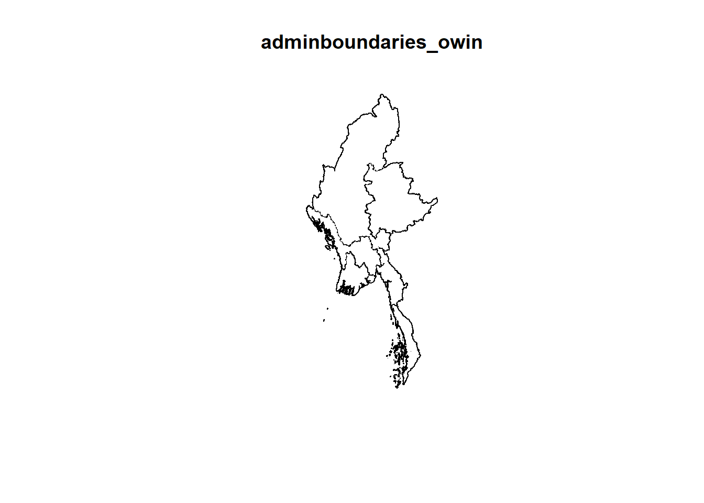
5.3 Combining point events objects and owin object
We then combine both the point events objects and owin object into a single ppp object for each quarter.
armedconflictQ121mm_ppp <- armedconflictQ121_ppp[adminboundaries_owin]
armedconflictQ221mm_ppp <- armedconflictQ221_ppp[adminboundaries_owin]
armedconflictQ321mm_ppp <- armedconflictQ321_ppp[adminboundaries_owin]
armedconflictQ421mm_ppp <- armedconflictQ421_ppp[adminboundaries_owin]
armedconflictQ122mm_ppp <- armedconflictQ122_ppp[adminboundaries_owin]
armedconflictQ222mm_ppp <- armedconflictQ222_ppp[adminboundaries_owin]
armedconflictQ322mm_ppp <- armedconflictQ322_ppp[adminboundaries_owin]
armedconflictQ422mm_ppp <- armedconflictQ422_ppp[adminboundaries_owin]
armedconflictQ123mm_ppp <- armedconflictQ123_ppp[adminboundaries_owin]
armedconflictQ223mm_ppp <- armedconflictQ223_ppp[adminboundaries_owin]
armedconflictQ323mm_ppp <- armedconflictQ323_ppp[adminboundaries_owin]
armedconflictQ423mm_ppp <- armedconflictQ423_ppp[adminboundaries_owin]
armedconflictQ124mm_ppp <- armedconflictQ124_ppp[adminboundaries_owin]
armedconflictQ224mm_ppp <- armedconflictQ224_ppp[adminboundaries_owin]We save each of these ppp objects with the write_rds() function.
write_rds(armedconflictQ121mm_ppp, "data/rds/armedconflictQ121mm_ppp.rds")
write_rds(armedconflictQ221mm_ppp, "data/rds/armedconflictQ221mm_ppp.rds")
write_rds(armedconflictQ321mm_ppp, "data/rds/armedconflictQ321mm_ppp.rds")
write_rds(armedconflictQ421mm_ppp, "data/rds/armedconflictQ421mm_ppp.rds")
write_rds(armedconflictQ122mm_ppp, "data/rds/armedconflictQ122mm_ppp.rds")
write_rds(armedconflictQ222mm_ppp, "data/rds/armedconflictQ222mm_ppp.rds")
write_rds(armedconflictQ322mm_ppp, "data/rds/armedconflictQ322mm_ppp.rds")
write_rds(armedconflictQ422mm_ppp, "data/rds/armedconflictQ422mm_ppp.rds")
write_rds(armedconflictQ123mm_ppp, "data/rds/armedconflictQ123mm_ppp.rds")
write_rds(armedconflictQ223mm_ppp, "data/rds/armedconflictQ223mm_ppp.rds")
write_rds(armedconflictQ323mm_ppp, "data/rds/armedconflictQ323mm_ppp.rds")
write_rds(armedconflictQ423mm_ppp, "data/rds/armedconflictQ423mm_ppp.rds")
write_rds(armedconflictQ124mm_ppp, "data/rds/armedconflictQ124mm_ppp.rds")
write_rds(armedconflictQ224mm_ppp, "data/rds/armedconflictQ224mm_ppp.rds")5.1 Kernel Density Estimation
We now try deriving the KDE layers for Q1 2021.
kde_armedconflictQ121mm <- density(armedconflictQ121mm_ppp, sigma = bw.diggle, edge = TRUE, kernel = "quartic")
plot(kde_armedconflictQ121mm)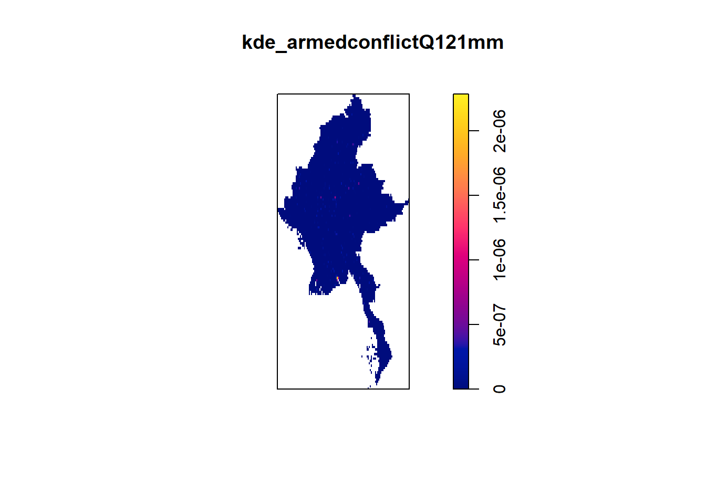
The density values of the output are extremely small. This is because the default measurement of the Indian 1954 / UTM zone 46N system is in metres. We convert the unit of measurement to kilometers.
armedconflictQ121mm_ppp_km <- rescale.ppp(armedconflictQ121mm_ppp, 1000, "km")
kde_armedconflictQ121mm_km <- density(armedconflictQ121mm_ppp_km, sigma = bw.diggle, edge = TRUE, kernel = "quartic")
plot(kde_armedconflictQ121mm_km)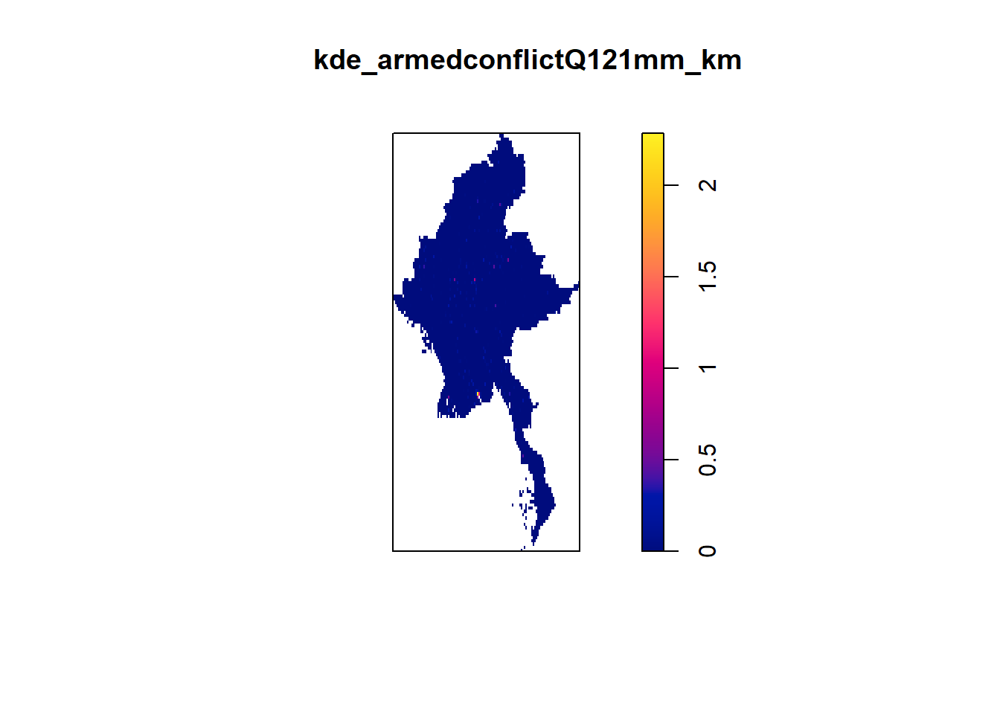
There is another problem. Apart from a few specks, most of Myanmar is dark. We check the bandwidth derived by the diggle method.
bw.diggle(armedconflictQ121mm_ppp_km) sigma
0.2283657 We may need a larger bandwidth to prevent undersmoothing, particularly given Myanmar’s relatively large land area and the rural nature of most of the country. We try the CvL automatic bandwidth selection method instead.
kde_armedconflictQ121mm_kmCvL <- density(armedconflictQ121mm_ppp_km, sigma = bw.CvL, edge = TRUE, kernel = "quartic")
plot(kde_armedconflictQ121mm_kmCvL)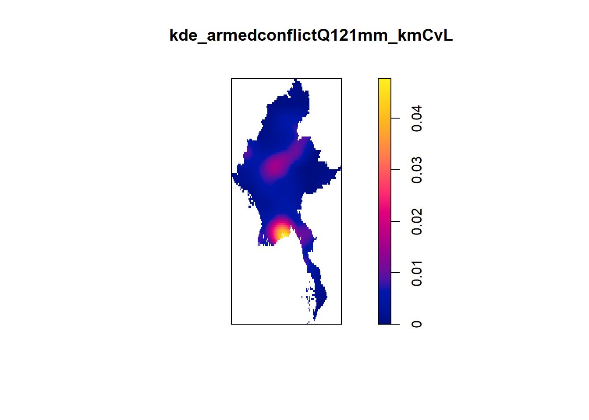
We can now clearly identify an area of extremely high intensity in central Myanmar, centered around Yangon Region, Myanmar’s most populous region and home to its largest city. Another area with relatively high intensity stretches from southern Kachin State, through northwestern Shan State, Mandalay Region and Sagaing Region.
We repeat the process of rescaling the data and deriving KDE layers for every quarter from 1 January 2021 until 30 June 2024.
kde_armedconflictQ221mm_kmCvL <- armedconflictQ221mm_ppp %>%
rescale.ppp(., 1000, "km") %>%
density(., sigma = bw.CvL, edge = TRUE, kernel = "quartic")
kde_armedconflictQ321mm_kmCvL <- armedconflictQ321mm_ppp %>%
rescale.ppp(., 1000, "km") %>%
density(., sigma = bw.CvL, edge = TRUE, kernel = "quartic")
kde_armedconflictQ421mm_kmCvL <- armedconflictQ421mm_ppp %>%
rescale.ppp(., 1000, "km") %>%
density(., sigma = bw.CvL, edge = TRUE, kernel = "quartic")
kde_armedconflictQ122mm_kmCvL <- armedconflictQ122mm_ppp %>%
rescale.ppp(., 1000, "km") %>%
density(., sigma = bw.CvL, edge = TRUE, kernel = "quartic")
kde_armedconflictQ222mm_kmCvL <- armedconflictQ222mm_ppp %>%
rescale.ppp(., 1000, "km") %>%
density(., sigma = bw.CvL, edge = TRUE, kernel = "quartic")
kde_armedconflictQ322mm_kmCvL <- armedconflictQ322mm_ppp %>%
rescale.ppp(., 1000, "km") %>%
density(., sigma = bw.CvL, edge = TRUE, kernel = "quartic")
kde_armedconflictQ422mm_kmCvL <- armedconflictQ422mm_ppp %>%
rescale.ppp(., 1000, "km") %>%
density(., sigma = bw.CvL, edge = TRUE, kernel = "quartic")
kde_armedconflictQ123mm_kmCvL <- armedconflictQ123mm_ppp %>%
rescale.ppp(., 1000, "km") %>%
density(., sigma = bw.CvL, edge = TRUE, kernel = "quartic")
kde_armedconflictQ223mm_kmCvL <- armedconflictQ223mm_ppp %>%
rescale.ppp(., 1000, "km") %>%
density(., sigma = bw.CvL, edge = TRUE, kernel = "quartic")
kde_armedconflictQ323mm_kmCvL <- armedconflictQ323mm_ppp %>%
rescale.ppp(., 1000, "km") %>%
density(., sigma = bw.CvL, edge = TRUE, kernel = "quartic")
kde_armedconflictQ423mm_kmCvL <- armedconflictQ423mm_ppp %>%
rescale.ppp(., 1000, "km") %>%
density(., sigma = bw.CvL, edge = TRUE, kernel = "quartic")
kde_armedconflictQ124mm_kmCvL <- armedconflictQ124mm_ppp %>%
rescale.ppp(., 1000, "km") %>%
density(., sigma = bw.CvL, edge = TRUE, kernel = "quartic")
kde_armedconflictQ224mm_kmCvL <- armedconflictQ224mm_ppp %>%
rescale.ppp(., 1000, "km") %>%
density(., sigma = bw.CvL, edge = TRUE, kernel = "quartic")Again, we save the quarterly KDE layers with write_rds().
write_rds(kde_armedconflictQ121mm_kmCvL, file = "data/rds/kde_armedconflictQ121mm_kmCvL")
write_rds(kde_armedconflictQ221mm_kmCvL, file = "data/rds/kde_armedconflictQ221mm_kmCvL")
write_rds(kde_armedconflictQ321mm_kmCvL, file = "data/rds/kde_armedconflictQ321mm_kmCvL")
write_rds(kde_armedconflictQ421mm_kmCvL, file = "data/rds/kde_armedconflictQ421mm_kmCvL")
write_rds(kde_armedconflictQ122mm_kmCvL, file = "data/rds/kde_armedconflictQ122mm_kmCvL")
write_rds(kde_armedconflictQ222mm_kmCvL, file = "data/rds/kde_armedconflictQ222mm_kmCvL")
write_rds(kde_armedconflictQ322mm_kmCvL, file = "data/rds/kde_armedconflictQ322mm_kmCvL")
write_rds(kde_armedconflictQ422mm_kmCvL, file = "data/rds/kde_armedconflictQ422mm_kmCvL")
write_rds(kde_armedconflictQ123mm_kmCvL, file = "data/rds/kde_armedconflictQ123mm_kmCvL")
write_rds(kde_armedconflictQ223mm_kmCvL, file = "data/rds/kde_armedconflictQ223mm_kmCvL")
write_rds(kde_armedconflictQ323mm_kmCvL, file = "data/rds/kde_armedconflictQ323mm_kmCvL")
write_rds(kde_armedconflictQ423mm_kmCvL, file = "data/rds/kde_armedconflictQ423mm_kmCvL")
write_rds(kde_armedconflictQ124mm_kmCvL, file = "data/rds/kde_armedconflictQ124mm_kmCvL")
write_rds(kde_armedconflictQ224mm_kmCvL, file = "data/rds/kde_armedconflictQ224mm_kmCvL")We can now plot these quarterly KDE layers.
plot(kde_armedconflictQ121mm_kmCvL)plot(kde_armedconflictQ221mm_kmCvL)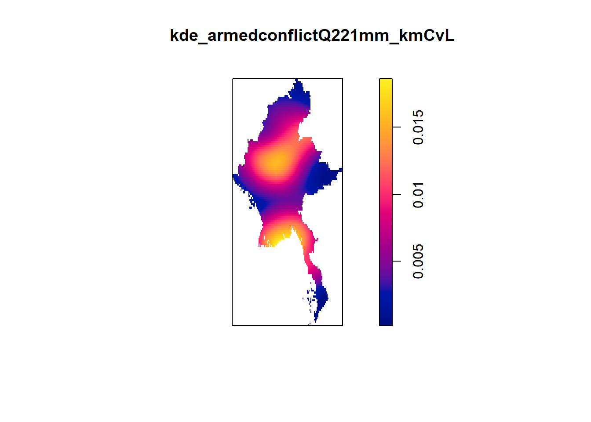
plot(kde_armedconflictQ321mm_kmCvL)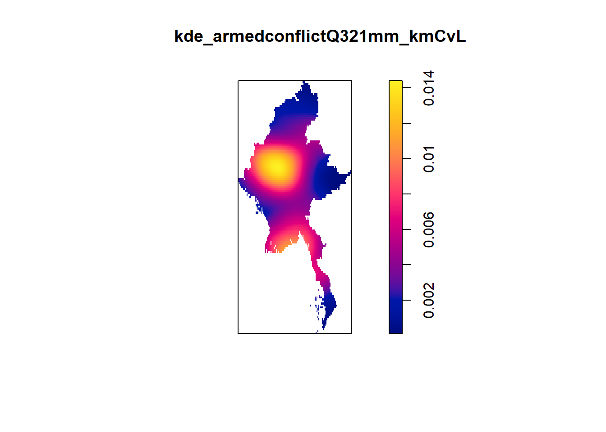
plot(kde_armedconflictQ421mm_kmCvL)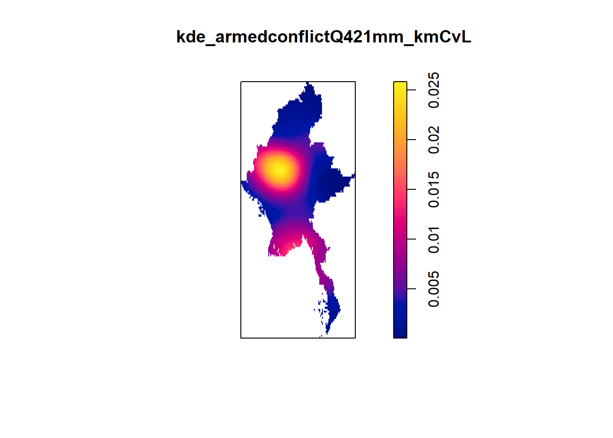
plot(kde_armedconflictQ122mm_kmCvL)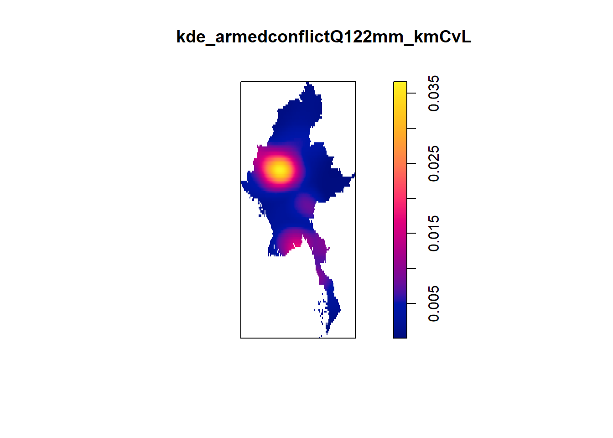
plot(kde_armedconflictQ222mm_kmCvL)plot(kde_armedconflictQ322mm_kmCvL)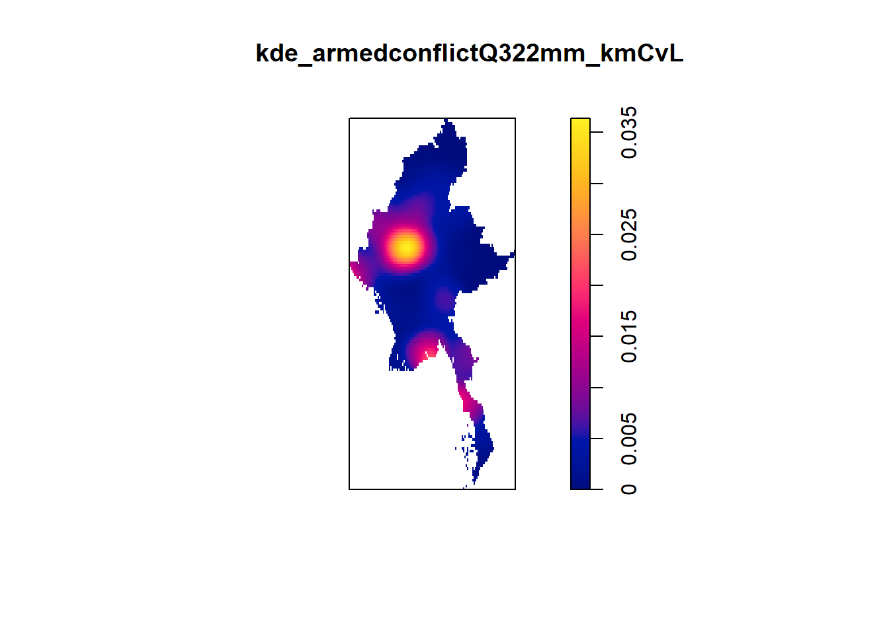
plot(kde_armedconflictQ422mm_kmCvL)plot(kde_armedconflictQ123mm_kmCvL)plot(kde_armedconflictQ223mm_kmCvL)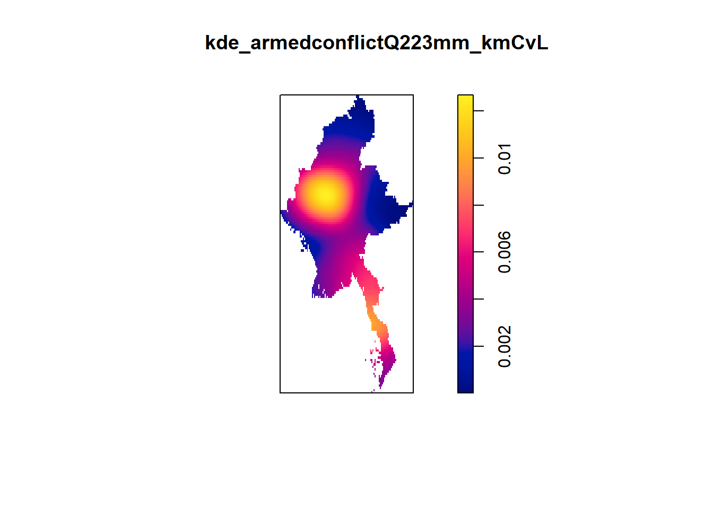
plot(kde_armedconflictQ323mm_kmCvL)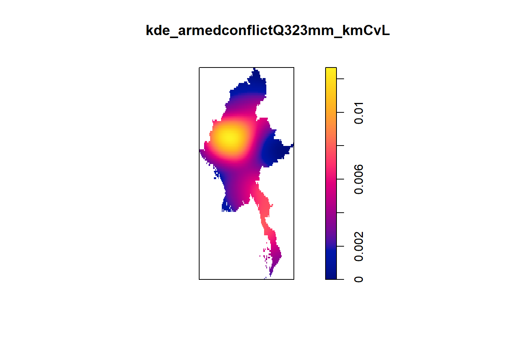
plot(kde_armedconflictQ423mm_kmCvL)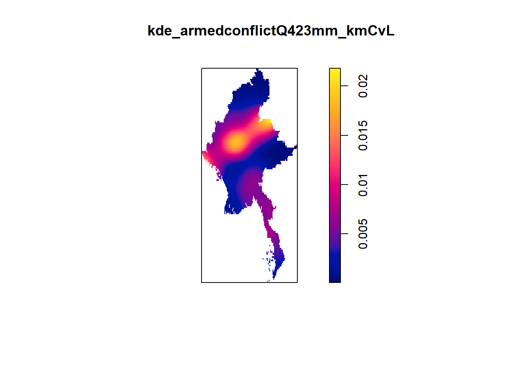
plot(kde_armedconflictQ124mm_kmCvL)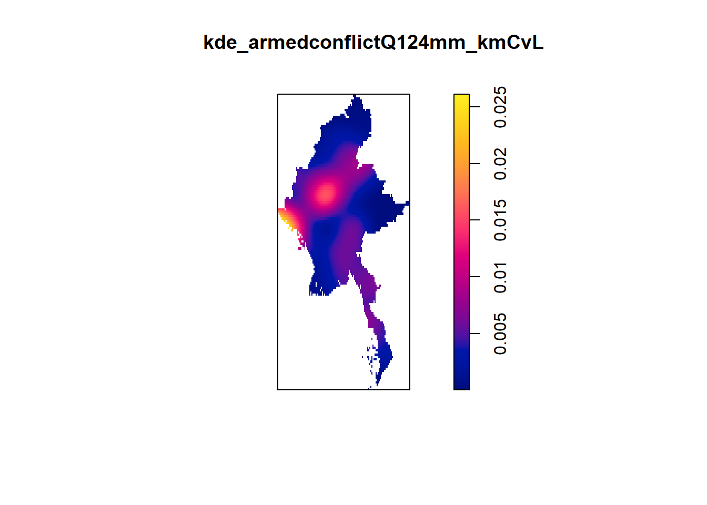
plot(kde_armedconflictQ224mm_kmCvL)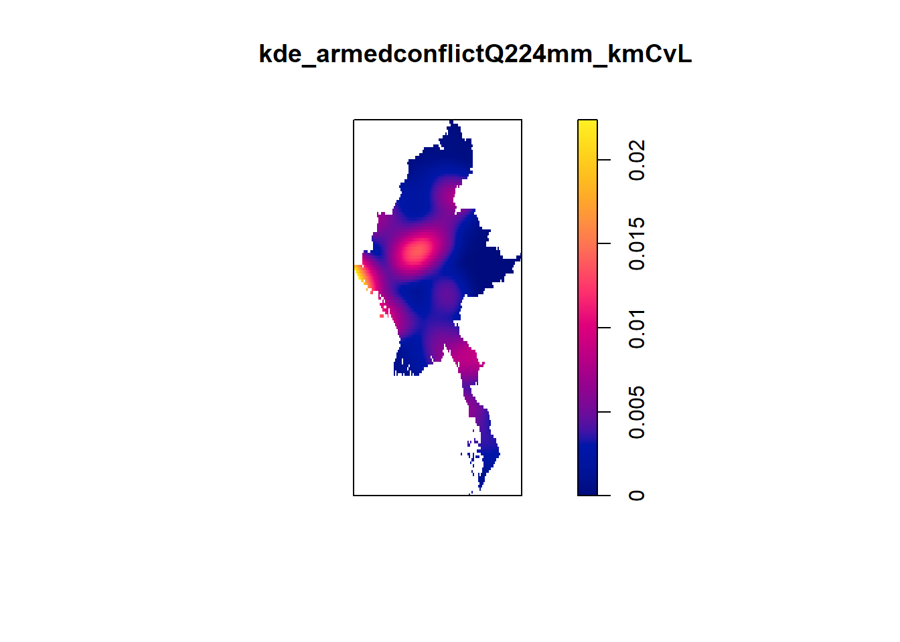
6.0 2nd Order Spatial Point Patterns Analysis
Next, we perform 2nd order spatial point patterns analysis, testing whether the event points in each cluster are clustered, randomly distributed, or dispersed. To do this, we would ideally use the L function, which estimates spatial dependence over a wider range of scales than the G and F functions. However, with a total of 51553 event points across all 14 quarters, this would likely be too computationally demanding and take an extremely long amount of time. Hence, we can use the F function instead.
In the following code chunks, we generate Monte Carlo simulations of the F function under complete spatial randomness for each quarter, and plot the output against the F function derived from the observed data. Through this, we can perform a test of the null hypothesis that the distribution of armed conflict events is random in each quarter, with alpha = 2.5%.
We use the set.seed() function to ensure that the simulation results are reproducible.
set.seed(5)
armedconflictQ121mm_csr <- envelope(armedconflictQ121mm_ppp, Fest, nsim = 39, global = TRUE)
armedconflictQ221mm_csr <- envelope(armedconflictQ221mm_ppp, Fest, nsim = 39, global = TRUE)
armedconflictQ321mm_csr <- envelope(armedconflictQ321mm_ppp, Fest, nsim = 39, global = TRUE)
armedconflictQ421mm_csr <- envelope(armedconflictQ421mm_ppp, Fest, nsim = 39, global = TRUE)
armedconflictQ122mm_csr <- envelope(armedconflictQ122mm_ppp, Fest, nsim = 39, global = TRUE)
armedconflictQ222mm_csr <- envelope(armedconflictQ222mm_ppp, Fest, nsim = 39, global = TRUE)
armedconflictQ322mm_csr <- envelope(armedconflictQ322mm_ppp, Fest, nsim = 39, global = TRUE)
armedconflictQ422mm_csr <- envelope(armedconflictQ422mm_ppp, Fest, nsim = 39, global = TRUE)
armedconflictQ123mm_csr <- envelope(armedconflictQ123mm_ppp, Fest, nsim = 39, global = TRUE)
armedconflictQ223mm_csr <- envelope(armedconflictQ223mm_ppp, Fest, nsim = 39, global = TRUE)
armedconflictQ323mm_csr <- envelope(armedconflictQ323mm_ppp, Fest, nsim = 39, global = TRUE)
armedconflictQ423mm_csr <- envelope(armedconflictQ423mm_ppp, Fest, nsim = 39, global = TRUE)
armedconflictQ124mm_csr <- envelope(armedconflictQ124mm_ppp, Fest, nsim = 39, global = TRUE)
armedconflictQ224mm_csr <- envelope(armedconflictQ224mm_ppp, Fest, nsim = 39, global = TRUE)We save each of the simulation outputs with write_rds().
write_rds(armedconflictQ121mm_csr, file = "data/rds/armedconflictQ121mm_csr")
write_rds(armedconflictQ221mm_csr, file = "data/rds/armedconflictQ221mm_csr")
write_rds(armedconflictQ321mm_csr, file = "data/rds/armedconflictQ321mm_csr")
write_rds(armedconflictQ421mm_csr, file = "data/rds/armedconflictQ421mm_csr")
write_rds(armedconflictQ122mm_csr, file = "data/rds/armedconflictQ122mm_csr")
write_rds(armedconflictQ222mm_csr, file = "data/rds/armedconflictQ222mm_csr")
write_rds(armedconflictQ322mm_csr, file = "data/rds/armedconflictQ322mm_csr")
write_rds(armedconflictQ422mm_csr, file = "data/rds/armedconflictQ422mm_csr")
write_rds(armedconflictQ123mm_csr, file = "data/rds/armedconflictQ123mm_csr")
write_rds(armedconflictQ223mm_csr, file = "data/rds/armedconflictQ223mm_csr")
write_rds(armedconflictQ323mm_csr, file = "data/rds/armedconflictQ323mm_csr")
write_rds(armedconflictQ423mm_csr, file = "data/rds/armedconflictQ423mm_csr")
write_rds(armedconflictQ124mm_csr, file = "data/rds/armedconflictQ124mm_csr")
write_rds(armedconflictQ224mm_csr, file = "data/rds/armedconflictQ224mm_csr")We can now plot the simulation outputs.
plot(armedconflictQ121mm_csr)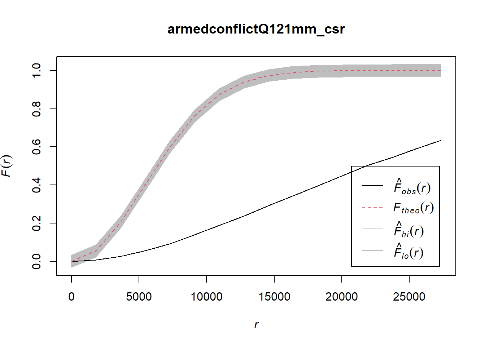
plot(armedconflictQ221mm_csr)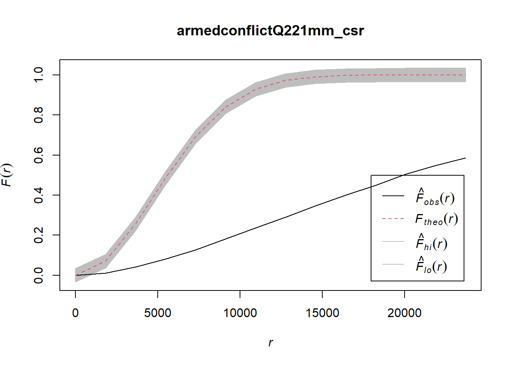
plot(armedconflictQ321mm_csr)plot(armedconflictQ421mm_csr)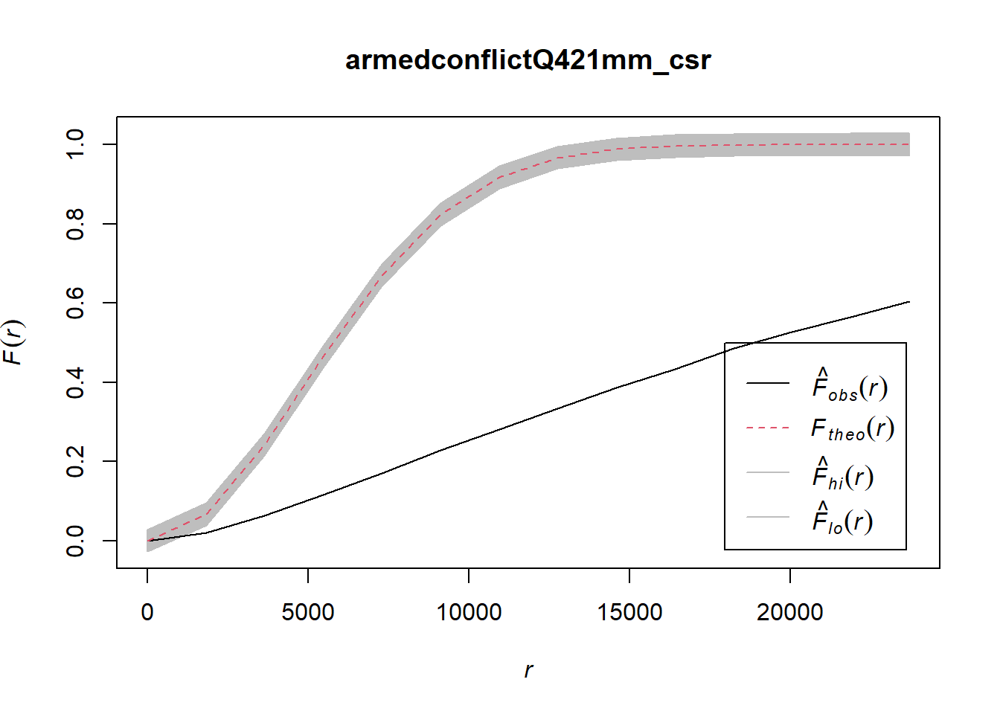
plot(armedconflictQ122mm_csr)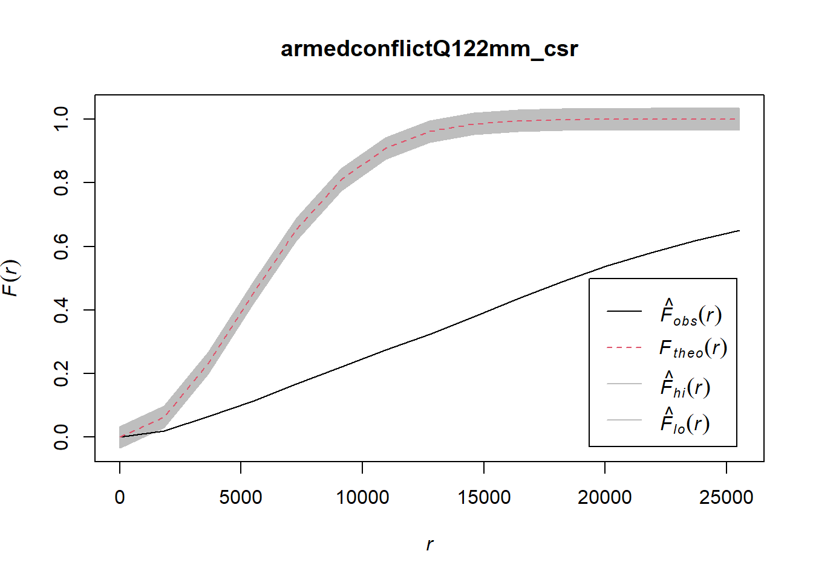
plot(armedconflictQ222mm_csr)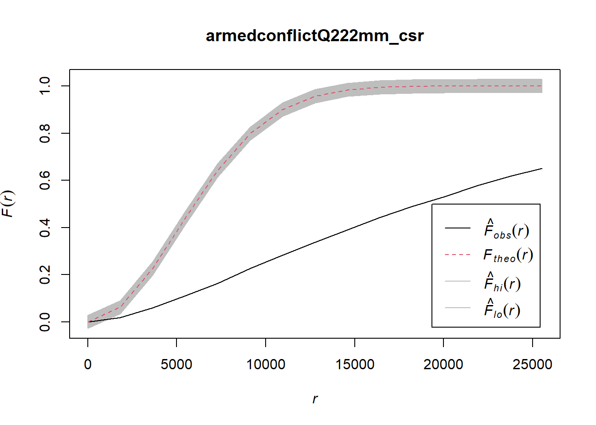
plot(armedconflictQ322mm_csr)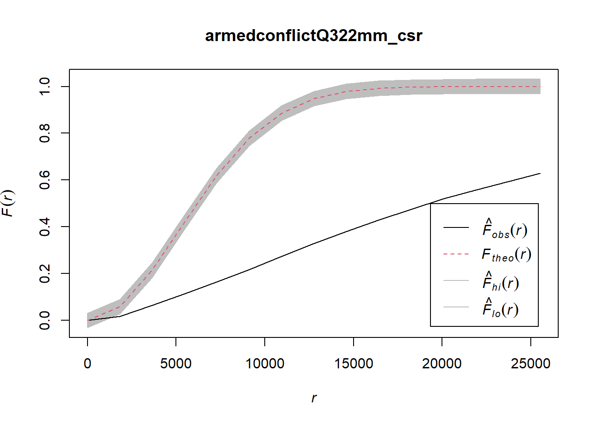
plot(armedconflictQ422mm_csr)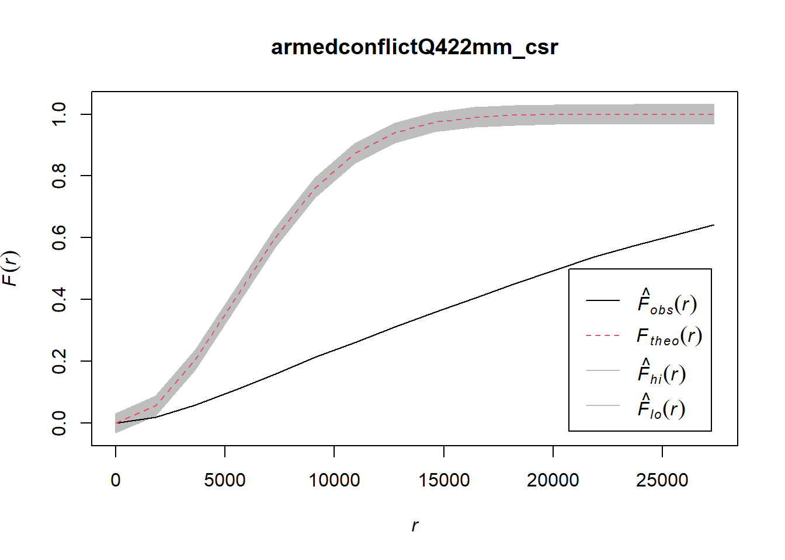
plot(armedconflictQ123mm_csr)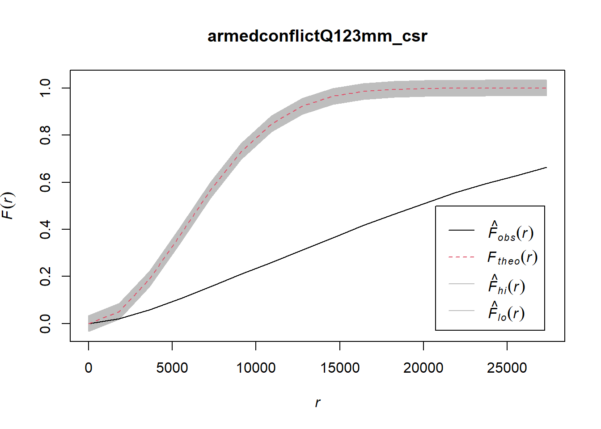
plot(armedconflictQ223mm_csr)plot(armedconflictQ323mm_csr)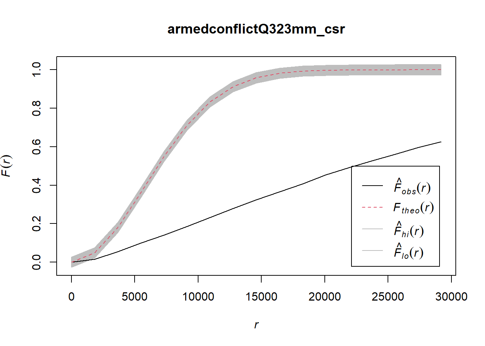
plot(armedconflictQ423mm_csr)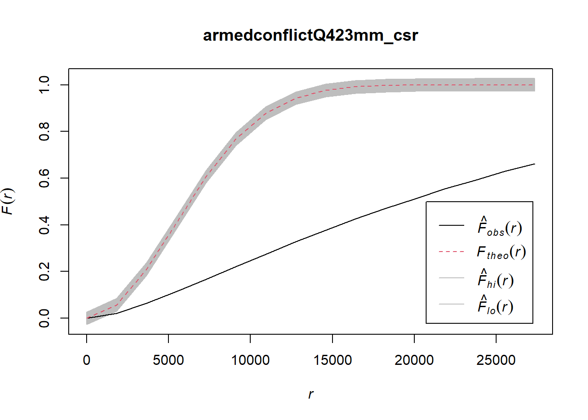
plot(armedconflictQ124mm_csr)plot(armedconflictQ224mm_csr)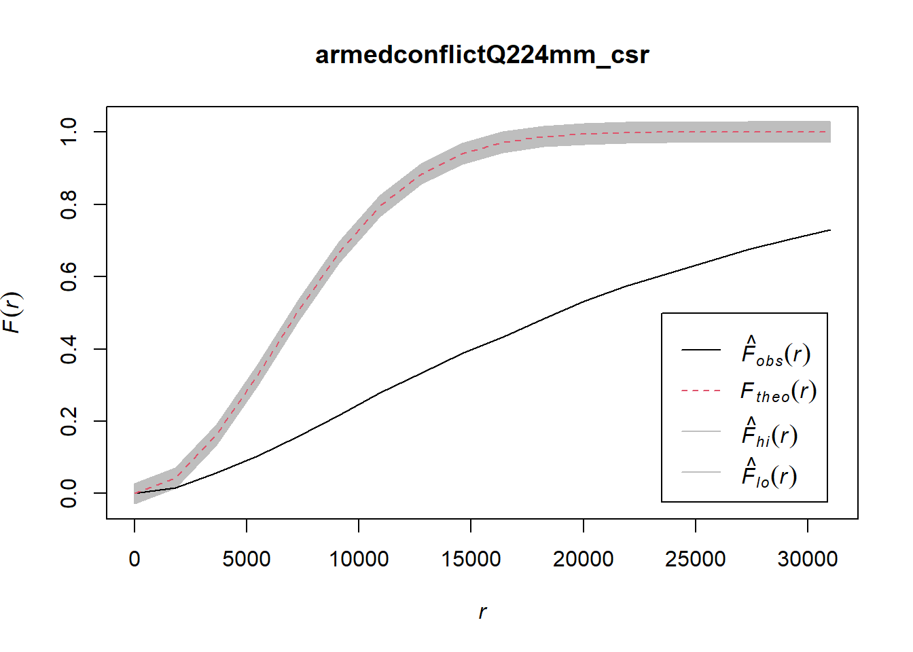
In all of the plots, the F function derived from the observed data lies well outside the simulated envelopes. Thus, at alpha = 2.5%, there is sufficient evidence to reject the null hypothesis that the distribution of armed conflict events in Myanmar is random in each quarter. We can conclude that in every quarter studied, the distribution of armed conflict events in Myanmar is non-random.
Moreover, since the F function lies below the lower envelope, the armed conflict events are distributed in a clustered pattern in every quarter. This makes sense as intuitively, armed conflict events are likely to be concentrated in areas with weak or non-existent levels of governmental control, or in dense population centres (respecially in the case of Protests, Riots, and Violence against civilians).
Indeed, the longstanding conflict in Myanmar, which has been described as “the world’s longest continuing civil war” (Rieffel, 2019), is one with strong inter-ethnic and inter-regional dimensions, pitting ethnic armed organizations seeking greater regional autonomy such as the Karen National Liberation Army and the Shan State Army against the Tatmadaw, and fighting had been concentrated in border regions up till the 2021 coup (Maizland, 2022). After the 2021 coup, it is not surprising that armed conflict events have continued to be concentrated in certain areas where opposing forces (namely the Tatmadaw, the People’s Defence Force of the anti-junta National Unity Government (NUG), as well as ethnic armed organisations allied to the NUG or aiming to consolidate their hold on their territories) are fighting for control (Maizland, 2022). In addition, we would also expect certain types of armed conflict events such as Protests, Riots and Violence against civilians, to be clustered in densely-populated areas, such as cities and major towns, where mass demonstrations by civilians can be most conveniently organised.
7.0 Spatio-Temporal Point Patterns Analysis
From the quarterly KDE layers derived above, we notice that the relative intensity of armed conflict events around Yangon was highest in early 2021, immediately after the coup, but declined compared to the rest of Myanmar thereafter. This may reflect how mass demonstrations arose in Myanmar’s largest city in the immediate aftermath of the 2021 coup and in the following months (e.g. Myanmar: more than 100,000 protest in streets against coup, 2021; Robinson & Wallace, 2021; Myanmar protesters paint Yangon red, defying bloody army crackdown, 2021), but gradually lost steam as the Tatmadaw reasserted control.
This is an example of a spatio-temporal point process. A spatio-temporal point process (also called space-time or spatial-temporal point process) is a random collection of points, where each point represents the time and location of an event.
Hence, we conduct spatio-temporal point patterns analysis on the data, this time focusing specifically on Protests and Riots in Yangon Region.
7.1 Extracting the Study Area
We extract Yangon Region from adminboundaries_sf_23946, and then plot it.
yangon <- adminboundaries_sf_23946 %>%
filter(ST == "Yangon")plot(yangon, main = "Yangon Region")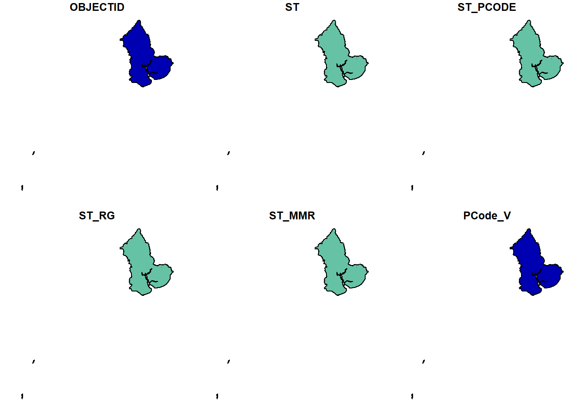
We see that Yangon Region includes offshore islands. For the purposes of our analysis, we should remove these islands and focus on mainland Yangon Region, around the city of Yangon itself, which is where most of the population lives.
We use st_cast() to split the MULTIPOLYGON into multiple POLYGON features, arrange these features by their land area, and then choose the largest area, which is the mainland (this method was inspired by a previous participant in this course, namely Ho, 2024, as well as an answer on StackExchange).
yangon_mainland <- yangon %>%
st_cast("POLYGON") %>%
mutate(area = st_area(.)) %>%
arrange(desc(area)) %>%
slice(1)Plotting this, we confirm that we have successfully extracted the mainland portion of Yangon Region.
plot(yangon_mainland)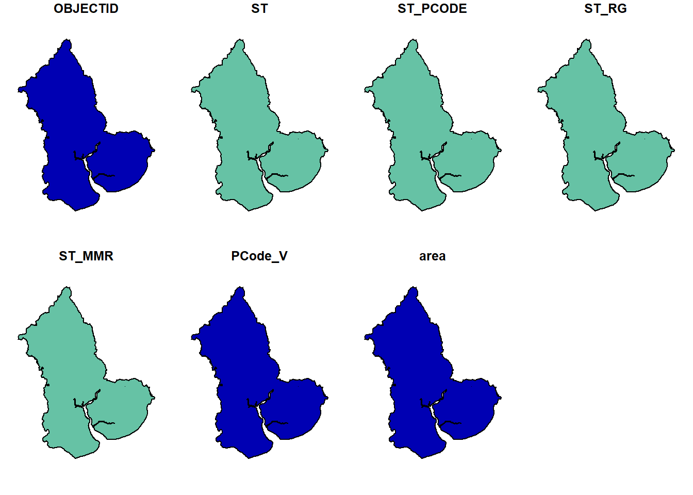
We can now convert this to an owin object and plot it.
yangon_owin <- as.owin(yangon_mainland)
plot(yangon_owin)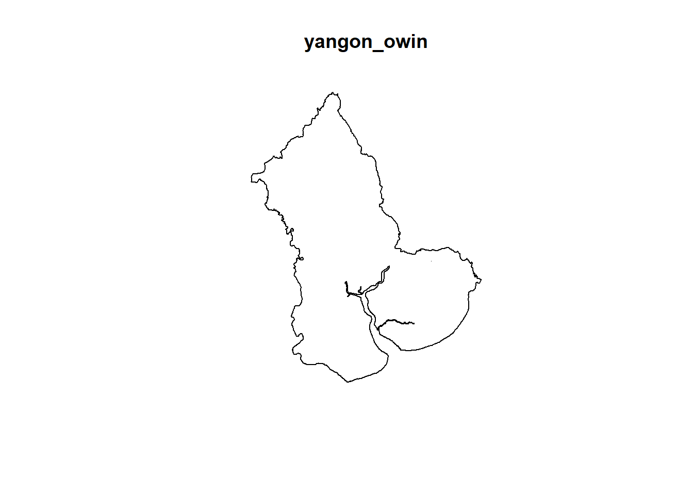
7.2 Preparing Protest and Riot Data
armedconflict_sf_23946 contains data on six types of armed conflict events. However, we are now focusing on two types: Riots and Protests.
riotprotests <- armedconflict_sf_23946 %>%
filter(event_type %in% c("Protests", "Riots"))Using the mutate() function and the quarter() function, we organise the data by quarter. Next, we can remove all the fields except for quarter and geometry.
riotprotests_date <- riotprotests %>%
mutate(event_date = as.numeric(dmy(event_date))) %>%
dplyr::select(event_date, geometry)7.3 Creating ppp object
riotprotests_date_ppp <- as.ppp(riotprotests_date)
riotprotests_date_ppp Marked planar point pattern: 8945 points
marks are numeric, of storage type 'double'
window: rectangle = [434051.8, 1218927.7] x [1108505.9, 3051406.1] unitsThe code chunk below is used to check the output is in the correct object class.
summary(riotprotests_date_ppp)Marked planar point pattern: 8945 points
Average intensity 5.865822e-09 points per square unit
*Pattern contains duplicated points*
Coordinates are given to 10 decimal places
marks are numeric, of type 'double'
Summary:
Min. 1st Qu. Median Mean 3rd Qu. Max.
18633 18696 18783 18919 19077 19904
Window: rectangle = [434051.8, 1218927.7] x [1108505.9, 3051406.1] units
(784900 x 1943000 units)
Window area = 1.52494e+12 square unitsWe notice a warning that the pattern contains duplicated (i.e. coincident) points. The statistical methodology used for spatial point patterns processes is based largely on the assumption that process are simple, that is, that the points cannot be coincident.
To overcome this, we use jittering, which will add a small perturbation to the duplicate points so that they do not occupy the exact same space.
riotprotests_date_ppp_jit <- rjitter(riotprotests_date_ppp,
retry = TRUE,
nsim = 1,
drop = TRUE)any(duplicated(riotprotests_date_ppp_jit))[1] FALSEThere are no longer any duplicated points.
7.4 Combining point events object and owin object
We then combine riotprotests_date_ppp_jit and yangon_owin, confining our analysis to the boundaries of mainland Yangon Region, and plot the output.
riotprotests_owin <- riotprotests_date_ppp_jit[yangon_owin]plot(riotprotests_owin)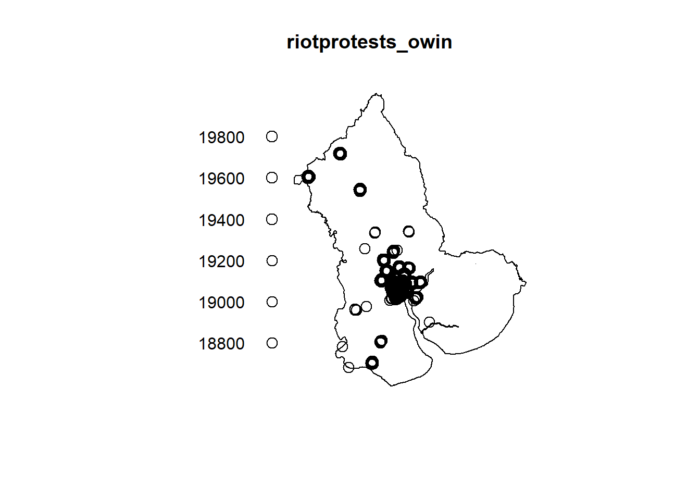
7.5 Computing Spatio-temporal KDE
spattemp.density() of sparr package computes the STKDE.
st_kde <- spattemp.density(riotprotests_owin)
summary(st_kde)Spatiotemporal Kernel Density Estimate
Bandwidths
h = 1484.59 (spatial)
lambda = 6.7613 (temporal)
No. of observations
1274
Spatial bound
Type: polygonal
2D enclosure: [778189.2, 907883.7] x [1806567, 1970206]
Temporal bound
[18638, 19878]
Evaluation
128 x 128 x 1241 trivariate lattice
Density range: [0, 1.272137e-10]7.6 Plotting the spatio-temporal KDE object
In the code chunk below, plot() of base R is used to plot st_kde, and save_gif() of gifski is used to turn it into an animation. To display the animation, include_graphics() of knitr is then used.
gifski::save_gif(
plot(st_kde, fix.range = TRUE),
gif_file = "stkde_animation.gif",
width = 800,
height = 600,
delay = 0.1,
loop = TRUE,
progress = TRUE)knitr::include_graphics("stkde_animation.gif")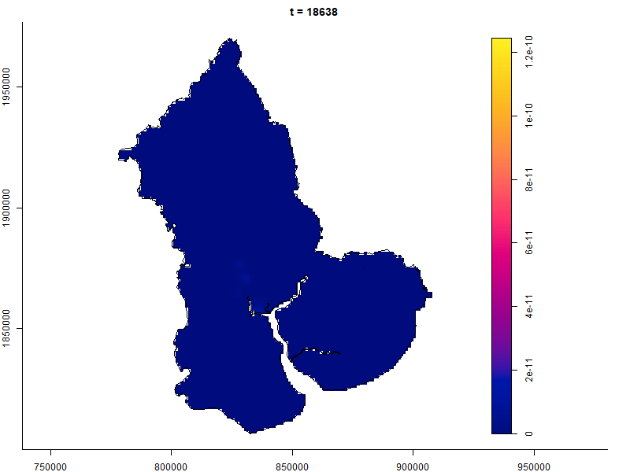
As we would expect, we can clearly see an initial surge in the intensity of riots and protests around the City of Yangon proper (located at the fork of the Yangon River) when the animation begins, around the time of the coup in 2021, which then gradually peters out as the Tatmadaw reasserted control, with rather low intensity thereafter. In addition, low intensity is observed in most of the rest of Yangon Region throughout the entire period, again confirming our prior knowledge than the City of Yangon itself was the locus of mass demonstrations against the coup.
8.0 Display the KDE layers on openstreetmap
8.1 Converting KDE output into grid object.
For the remaining analysis, we will focus on events occurring in Q1 2021, when the coup occurred.
We first convert the KDE output into grid object so that it is suitable for mapping purposes.
gridded_kde_Q121 <- as(kde_armedconflictQ121mm_kmCvL, "SpatialGridDataFrame")8.2 Converting gridded output into raster
Next, we will convert the gridded kernel density objects into RasterLayer objects by using raster() of raster package.
kde_Q121_raster <- raster(gridded_kde_Q121)kde_Q121_rasterclass : RasterLayer
dimensions : 128, 128, 16384 (nrow, ncol, ncell)
resolution : 7.293429, 16.32739 (x, y)
extent : 414.0715, 1347.63, 1076.012, 3165.918 (xmin, xmax, ymin, ymax)
crs : NA
source : memory
names : v
values : -5.931695e-18, 0.04771807 (min, max)Notice that the CRS property is NA. The code chunk below will be used to include the CRS information. In addition, recall that the default measurement of the Indian 1954 / UTM zone 46N system is in metres. However, we rescaled the data earlier so that the units of measurement would be in kilometers. We must now account for this. (This method was inspired by a previous participant in this course, namely Khant, 2024).
projection(kde_Q121_raster) <- CRS("+init=EPSG:23946 +units=km")8.3 Visualising the output in tmap
We can now display the output on OpenStreetMap of Myanmar using tmap.
tmap_mode("view")
tm_basemap("OpenStreetMap") +
tm_shape(kde_Q121_raster) +
tm_raster("v", alpha = 0.5, palette = "viridis") +
tm_layout(legend.position = c("right", "bottom"), frame = FALSE)